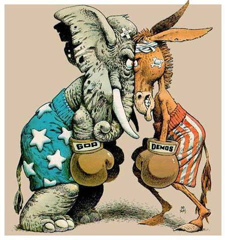

Political Science
Robert was drawn to political science because of a number of factors.
Family in politicsHaving grown up in front of news channels
curiosity of how the whole system works

Robert was drawn to political science because of a number of factors.
Family in politics